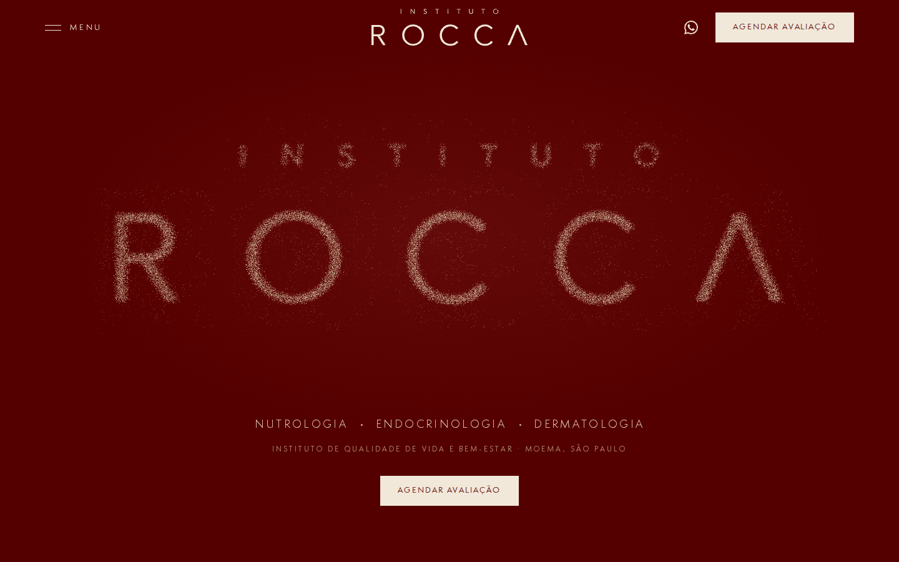

Versão final · em refinamento
Instituto Rocca
A abertura em partículas com a clínica logo abaixo, as três especialidades e as páginas internas. Home e internas no mesmo site.
Abrir o site →Site do Instituto Rocca · Versão final
A abertura em partículas com a clínica logo abaixo, as três especialidades e as páginas internas. Em refinamento antes de seguir para o cliente; as versões anteriores seguem só como arquivo no repositório.

A abertura em partículas com a clínica logo abaixo, as três especialidades e as páginas internas. Home e internas no mesmo site.
Abrir o site →